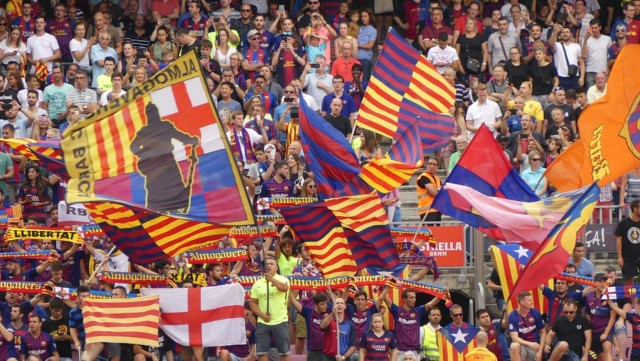

Top 10 maiores torcidas do mundo
10. São Paulo (Brasil) – 15,3 milhões

9. Boca Juniors (Argentina)- 16 milhões
8. Liverpool (Inglaterra) - 20 milhões
7. Juventus (Itália) – 21 milhões
6.Corinthians (Brasil) – 25 milhões
5. América (México) – 26,4 milhões
4. Barcelona (Espanha) - 27 milhões

3. Real Madrid (Espanha) - 29 milhões
2. Chivas (México) – 30,8 milhões
Flamengo (Brasil) – 42 milhões
Esse foi o top 10 maiores torcidas do mundo.